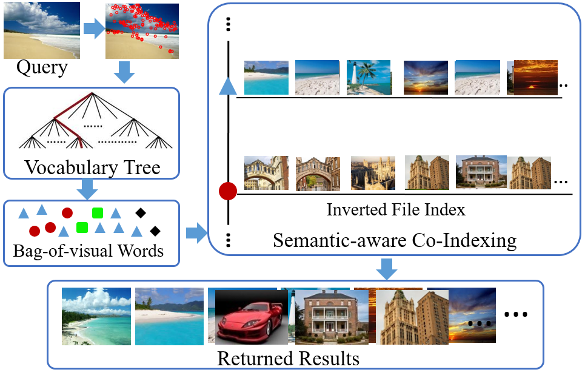
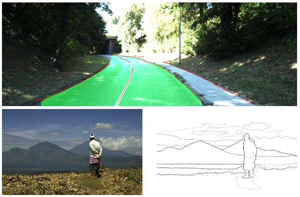

|
Shiliang Zhang
Assistant Professor, 1000 Youth Talents
School of Elctronic Engineering and Computer Science, Peking University
Address: Room 2641 No.2 Science Building, Peking University, Beijing, China
Email: slzhang.jdl at pku.edu.cn |
|
 |
Brief Bio: Shiliang Zhang is leading the Media and Vision Computing Group at Institute of Digital Media, Peking University. He received the Ph.D. degree from Institute of Computing Technology, Chinese Academy of Sciences in 2012 with honors. After that, he was a Postdoctoral Fellow in University of Texas at San Antonio and a Postdoctoral Scientist in NEC Labs America, Cupertino, CA.
In early 2015, he joined the school of Electronic Engineering and Computer Science, Peking University as a Tenure Track Assistant Professor and Ph.D. Advisor. His research interests include large-scale image retrieval, computer vision for autonomous driving, and deep learning for image understanding.
Internship and Graduate Students (both Ph.D. and Master) Opening: I am looking for self-motivated candidates who have solid mathematical backgrounds, strong English ability, and strong coding skills. If you are interested in doing research on Computer Vision and Multimedia, and want to apply your algorithms to real problems like Internet image search, autonomous driving, please send detailed CV to me.
|
| RESEARCH HIGHLIGHT |
|
Person and vehicle ReID
|
Fine-grained visual categorization
|

Large-scale image search
|

Scene Understanding
|
|
| RECENT PUBLICATIONS
(complete list...) |
- L. Wei, S. Zhang, W. Gao, and Q. Tian. Person Transfer GAN to Bridge Domain Gap for Person Re-Identification, Spotlight at CVPR, 2018.
- C. Su, F. Yang, S. Zhang, Q. Tian, L. S. Davis, and W. Gao. Multi-Task learning with low rank attribute embedding for multi-camera person re-identification. IEEE T-PAMI, 2018.
- S. Zhang, S. Zhang, T. Huang, W. Gao, and Q. Tian. Learning affective features with a hybrid deep model for audio-visual emotion recognition. IEEE T-CSVT, 2018.
- S. Zhang, S. Zhang, T. Huang, and W. Gao. Speech emotion recognition using deep convolutional neural network and discriminant temporal pyramid matching. IEEE T-MM, 2018.
- H. Yao, S. Zhang, Y. Zhang, J. Li, and Q. Tian. AutoBD: Automated Bi-level Description for scalable fine-grained visual categorization. IEEE T-IP, 2018.
- C. Su, S. Zhang, J. Xing, Q. Tian, and W. Gao. Multi-type attributes driven multi-camera person re-identification, Pattern Recognition, 2018.
- C. Su, S. Zhang, Y. Fan, G. Zhang, Q. Tian, W. Gao, and L. S Davis. Attributes driven tracklet -to-tracklet person re-identification using latent prototypes space mapping. Pattern Recognition, 2017.
- C. Su, J. Li, S. Zhang, J. Xing, W. Gao, and Q. Tian. Pose-driven Deep Convolutional Model for Person Re-identification. ICCV, 2017.
- L. Wei, S. Zhang, H. Yao, W. Gao, and Q. Tian. GLAD: Global-Local-Alignment Descriptor for Pedestrian Retrieval. ACM MM, 2017.
- H. Yao, S. Zhang, Y. Zhang, Q. Tian. One-Shot Fine-Grained Instance Retrieval. ACM MM, 2017.
|
| NEWS |
- 2018. 3, one paper on person Re-Identification was accepted as Spotlight paper by CVPR 2018. The dataset and code can be downloaded from the link.
- 2018. 2, we are organizing a tutorial on FG2018: Person Re-Identification: Recent Advances and Challenges. Welcome and see you in Xi’an!
- 2018. 2, one paper on video emotion recognition accepted by IEEE T-MM Congratulations to all!
- 2018. 1, the code of our ACM MM17 paper: GLAD: Global-Local-Alignment Descriptor for Pedestrian Retrieval is released, link.
- 2018. 1, the dataset of our ACM MM17 paper: One-Shot Fine-Grained Instance Retrieval is released, link.
- 2018. 1, one paper on Fine-grained visual categorization was accepted by T-IP, Congratulations to all!
- 2018. 1, one paper on attribute based person Re-Identification was accepted by T-PAMI, Congratulations to all!
|
| SPONSORS |
Thanks the generous support of all the sponsors.
|

|
|